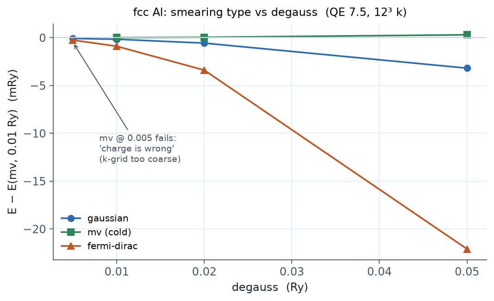

Ninety percent of convergence trouble in metals and magnets traces back to
how occupations are handled. Choosing occupations is the physical judgment
"is this system an insulator or a metal?"
occupations, by system type
| Value | Meaning | Use for |
|---|---|---|
'fixed' |
Integer occupations; requires a gap | Insulators and semiconductors |
'smearing' |
Smooth partial occupations around the Fermi level | Metals, and systems whose gap is uncertain |
'tetrahedra' / 'tetrahedra_lin' / 'tetrahedra_opt' |
Exact BZ integration without smearing | nscf runs for DOS and bands only |
'from_input' |
Occupations given per band via the OCCUPATIONS card |
Special cases |
Using smearing on an insulator lets states near the gap edge acquire small
fractional occupations and contaminates the energy. Using 'fixed' on a
metal stops the run with
the system is metallic, specify occupations.
Smearing types and degauss
With occupations='smearing' two variables follow: which function to smear
with (smearing) and how wide (degauss, in Ry).
| Value | Character | Use for |
|---|---|---|
'gaussian' |
Simple, safe, slow to converge | General |
'mv' (Marzari-Vanderbilt, cold) |
Free energy ≈ E(σ→0), no extrapolation needed | Default choice for metals |
'mp' (Methfessel-Paxton) |
Higher-order expansion; occupations can go negative | Metals |
'fd' (Fermi-Dirac) |
A physical electronic temperature | Finite-temperature work |
Smearing is a numerical stabilizer and an approximation at the same time.
Larger degauss converges more easily but drifts further from the σ = 0
limit. The smearing contrib. (-TS) term in the output is the size of that
contamination: if it is large, your degauss is too big.
Measured: degauss dependence per smearing type in Al
The scan below is from Example E5: fcc Al at
12×12×12 k, with degauss scanned for each smearing type.

The tetrahedron method: post-processing only
'tetrahedra_opt' (the optimized tetrahedron method) integrates the BZ
without smearing and gives the cleanest DOS. Its constraints:
- It requires a Γ-centered automatic grid with zero shift
(
K_POINTS automaticwith shifts0 0 0). - Use it in the nscf step for DOS and bands, not in the SCF itself (Chapter 10).
- Measured caveat: on QE 7.5 we found that projwfc.x writes all-zero PDOS
on top of a
'tetrahedra_opt'nscf. If you need PDOS, use the classic'tetrahedra'(Example E7).
Setting degauss to "whatever converges nicely" and forgetting about it. The smearing width is an approximation that stays in your results, so always check that your target property is insensitive to it. In magnetic systems, an oversized degauss is a classic cause of the magnetic moment collapsing to zero (Chapter 12). Also, k-grid convergence and degauss convergence are coupled in metals; scan them together.
Related examples
- E5 · fcc Al metal: smearing SCF, Fermi level, and the measured degauss scan.
- E4 · O₂ molecule: why even a molecule can need
smearing (degenerate partial occupations) and
tot_magnetization.